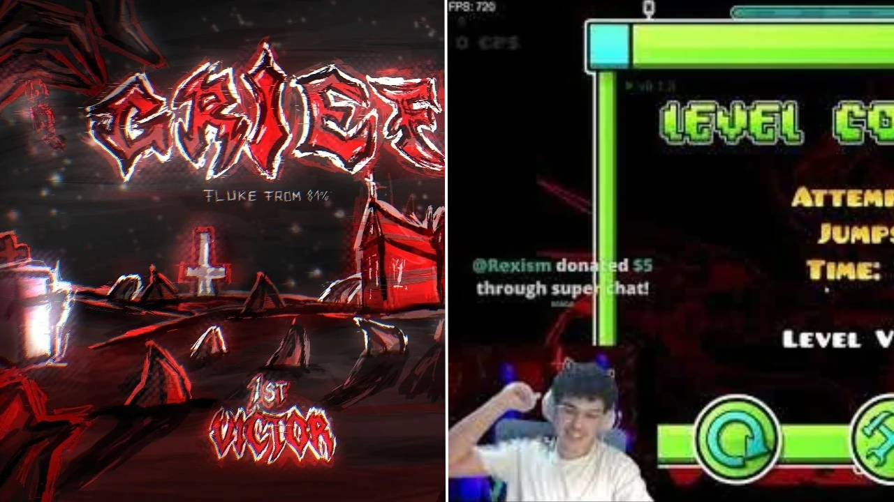

GRIEF: wPopoff conquista o primeiro victor, Zoink garante o segundo lugar e Drama GD continua sua jornada
Após a verificação de Doggie, o nível que ocupa o topo da Demonlist já possui dois jogadores que conseguiram completar o desafio. Enquanto isso, Drama GD acumula centenas de milhares de tentativas e apresenta novos progressos.

A disputa pelas primeiras conclusões de GRIEF chegou a um momento importante. O nível, criado como uma releitura do antigo Slaughterhouse de icedcave, foi verificado por Doggie em 5 de outubro de 2026, após aproximadamente 436.879 tentativas e dois anos e cinco meses de trabalho.
A conclusão colocou GRIEF diretamente na primeira posição da Demonlist, tornando-o o novo Top 1 do jogo. A conquista encerrou uma das verificações mais longas da história recente de Geometry Dash e iniciou uma nova disputa: quem conseguiria ser o primeiro jogador a completar o nível depois de seu verificador?
wPopoff se torna o primeiro victor
O primeiro jogador a conseguir completar GRIEF foi wPopoff, em 2 de novembro de 2026. Sua conquista aconteceu após aproximadamente 32 mil tentativas, 75 horas de jogo e 15 transmissões dedicadas ao nível.
O resultado foi ainda mais impressionante por causa de seu progresso final. wPopoff conseguiu completar o nível após um fluke de 81%, justamente uma porcentagem em que já havia falhado outras três vezes.
Em sua publicação, o jogador demonstrou surpresa com a própria conquista e explicou que inicialmente havia começado a jogar GRIEF como parte de um projeto de conteúdo chamado "A Week With Grief".
Segundo ele, não acreditava que conseguiria alcançar o primeiro victor quando começou. Entretanto, após conseguir um progresso de 36-57% no sétimo dia e estabelecer uma run que considerou um recorde mundial, decidiu continuar tentando.
Zoink conquista o segundo victor
Quatro dias depois da conquista de wPopoff, em 6 de novembro, Zoink também conseguiu completar GRIEF, tornando-se o segundo victor do nível.
O jogador precisou de aproximadamente 37 mil tentativas e 67 horas de jogo. Antes da conclusão, já havia apresentado progressos importantes, incluindo 16-100% e 91% a partir do início.
Um dos momentos mais difíceis de sua jornada foi a seção de DrCuber, que exigia uma quantidade elevada de cliques por segundo. Zoink também chegou a tirar cinco dias de descanso antes de retornar às tentativas.
Sua conclusão aconteceu após uma falha em 98%, na parte final do nível. Mesmo assim, conseguiu superar o desafio pouco depois.
Drama GD continua tentando
Enquanto os dois primeiros jogadores já garantiram suas conclusões, Drama GD continua tentando completar GRIEF.
O jogador apresentou diversos progressos, incluindo 28% a partir do início, 29-72% e 25-65%. Também possui uma run de 71-100%, que conseguiu realizar quatro vezes.
Em suas publicações, Drama GD demonstrou confiança em sua consistência e afirmou estar muito próximo de completar os três runs necessários para finalizar o nível.
Com aproximadamente 692 mil tentativas registradas em suas publicações, o jogador continua investindo tempo no projeto, mesmo após sucessivas mortes em partes avançadas.
A disputa agora possui dois vencedores além de Doggie, mas a jornada de outros jogadores continua. GRIEF segue sendo um dos principais assuntos da comunidade, tanto pela dificuldade quanto pela quantidade de tentativas necessárias para alcançar sua conclusão.
Wiki.gg — GRIEF
Wiki.gg — Zoink
Wiki.gg — wPopoff
DashWatch — Jogadores disputam a primeira conclusão de GRIEF após novos recordes